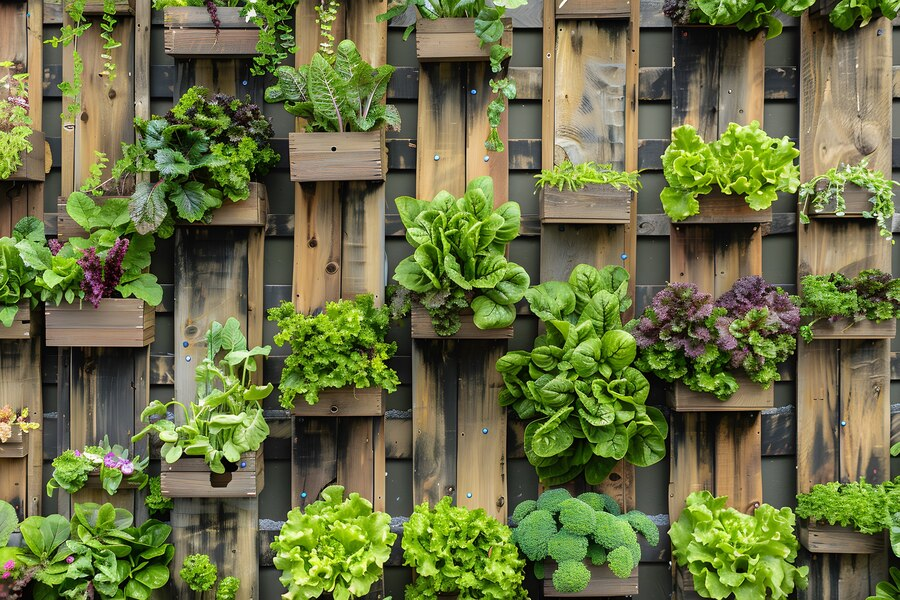
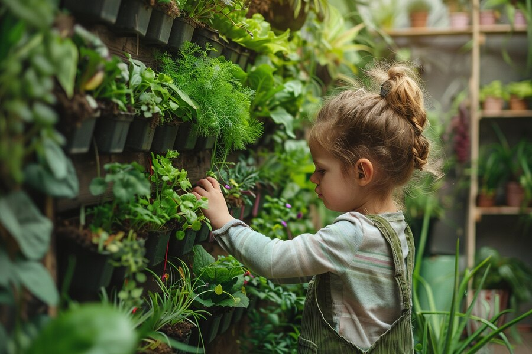

Transform your tiny space into a green haven
About Us Benefits Top Tips Contact UsUrban gardening is the practice of growing plants in an urban environment. It's perfect for those who have limited space but still want to enjoy the benefits of gardening. Urban gardening can trasform small spaces into lush, productive oases through creative methods like vertical gardens, rooftop gardens, and hydroponic systems. Imagine a living wall of herbs in your kitchen, a rooftop vegetable patch , or a compact hydroponic setup in your apartment. You can even grow plants in recycled containers or create community gardens with your neighbors.These innovative approches make urban gardening not only practical but also exciting and sustainable, bringing nature into the heart of the city.
Urban gardening turns small spaces into green, happy places!
Discover the best practices to make the most of your small space for urban gardening.
For more urban gardening tips, get in touch with us!